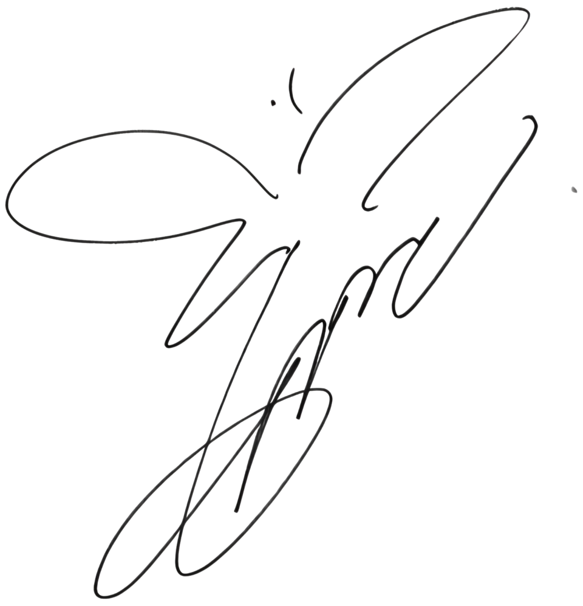

關於太妍

姓名： 金太耎 (Kim Tae-yeon)
藝名： 太妍、TAEYEON
國籍： 大韓民國
生日： 1989年3月9日
星座： 雙魚座
職業： 明星、歌手、模特、主持人、YouTuber、舞者
出道： 團體：2007年8月5日(少女時代);個人：2015年10月7日
代表作： 《To.X》、《INVU》、《Fine》

職業生涯里程碑
2007
少女時代出道
太妍作為少女時代的隊長正式出道，首張單曲《Into the New World》發布，奠定團體基礎。
2015
個人出道
發布首張個人迷你專輯《I》，主打歌《I》在Gaon榜表現優異，標誌獨立藝人轉型成功。
2016
單曲《Rain》發布
作為SM Station計劃的一部分，獲得Gaon數字榜冠軍，展現音樂多樣性。
2016
迷你專輯《Why》發布
主打歌《Why》廣受好評，專輯在Gaon榜奪冠。
2017
正規專輯《My Voice》發布
包含《11:11》、《Fine》、《Make Me Love You》，數字榜表現優異。
2022
發布EP《INVU》
以主打歌《INVU》獲得成功，進一步鞏固其獨立藝人地位。
2024
發布EP《Letter to Myself》
包含主打歌《Letter to Myself》，展現自我反思和成長的主題。